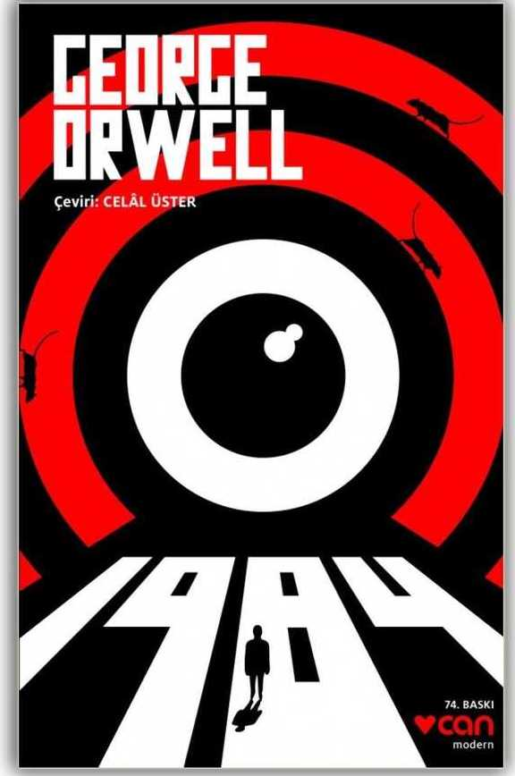
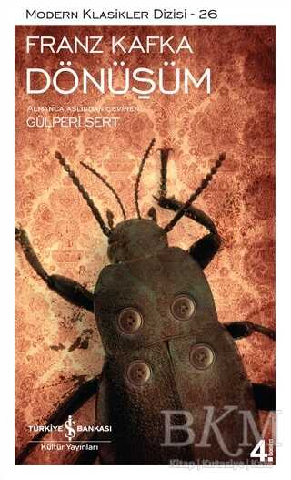
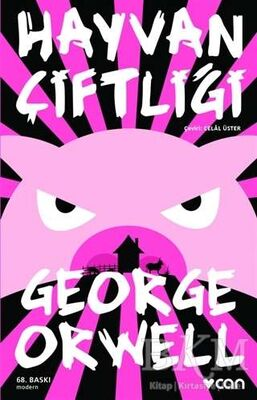
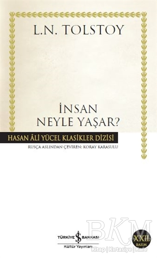
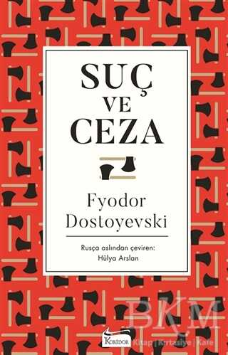

1984
1984 kitabı, İngiliz filozof ve yazar George Orwell tarafından kaleme alınmış, 1984 kitap konusu olarak 20. yüzyılın en önemli distopya örneklerinden biri olmuştur. George Orwell, 1948 yılında tamamladığı ve geleceğe dair karamsar bir kurgu geliştirerek gelecek hakkında insanlığı uyarmayı amaçlamıştır. Egemen sınıfa dayalı, totaliter, baskıcı bir yönetim anlayışının benimsendiği üç ayrı devletin egemenliğindeki siyasal düzenden bahsetmektedir. 1984 kitabı, günümüz ile geçmiş arasında gerçekçi bir benzerliklere dayandıran, dönemin okurlarını düşündürtüp hayal güçlerinin sınırlarını zorlamayı sağlayan distopik, alegorik, politik bir romandır.
Dönüşüm.
Kitabın ana kahramanı olan Gregor Samsa, hikayede ailesini geçindirmekle yükümlü sıradan bir pazarlamacı olarak anlatılıyor. Ancak roman ve hikaye dünyasının bilindik tasvirlerinden ziyade Gregor, hayatından hiç şikayetçi olmadığı gibi ona tutunan bir tip olarak yansıtılıyor. Ve Gregor bir sabah, alışageldiği hayatın çok dışında bir gerçekliğe uyanıyor. Kendini kocaman bir böceğe dönüşmüş bulan Gregor, bunu fark ettiği ilk an büyük bir dehşete düşüyor. Gregor, böcek olduğunun farkına varmasının üzerinden çok geçmeden günlük rutinini ve yerine getirmesi gereken sorumlulukları düşünmeye başlıyor. Böylelikle Kafka’nın bu akıl ve ironi dolu hikayesinde itaat duygusunun, göze çarpan ilk unsurlardan biri olduğu görülüyor. Bu noktada yazarın insan yaşamına ve düzene olan ince eleştirisi dikkat çekiyor. Dönüşüm’ün verdiği en büyük mesajı ise yabancılaşma duygusu oluşturuyor. Öyle ki hikayede Gregor’un tiksindirici bir edayla anlatımının altında, kitap hakkında varılacak ilk farkındalıklardan biri şu: İnsan bir gün gerekenden daha farklı bir halde bulunduğunda yabancılık, kişiye en yakın olanlardan başlıyor. Hikayede Gregor’un ailesinin çaresizliği ve ona karşı tutumu, Gregor’u olduğu kadar sizi de derinden etkileyecek.
Hayvan Çiftliği
Bir zamanlar İngiltere’de içindeki hayvanların çok çalıştırıldığı, aç bırakıldığı, sahipleri tarafından kötü muamele gördüğü bir çiftlik varmış. Bir gün hayvanlar en akıllıları olan domuzların önderliğinde bu ezildikleri düzene başkaldırmış ve çiftliğin yönetimini ele geçirmiş. Ve sonra ... ve sonra her şey ters gitmiş. Sloganlar, yüce duygular, adalet, eşitlik fikirleriyle yaratılan bir cennetin cehenneme dönüşmesi ne kadar uzun sürebilir? Orwell’in Stalin Rusya’sına yönelik fablı aslında bir insanlık kullanma kılavuzu değil de nedir? Değişenin sadece isimler, yüzler ve yerler olduğu zamansız bir hikaye. “Bir gün kocaman bir beygiri dar bir yolda önüne katmış götüren ve hayvan ne zaman dönmek istese onu kırbaçlayan on yaşlarında bir çocuğu görünceye kadar. O zaman birden aklıma geldi ki böyle hayvanlar eğer güçlerinin bilincinde olsalardı onlara zorla hiçbir şey yaptıramazdık; insanlar hayvanları tam olarak zenginlerin proletaryayı sömürdüğü gibi sömürüyorlardı.”
İnsan Neyle Yaşar
“İnsan Neyle Yaşar?”, “İnsanın Ne Kadar Toprağa İhtiyacı Var?” ve “Kıvılcımı Söndürmeyen Yangını Önleyemez” dünya edebiyatının en büyük yazarlarından biri olan Lev N. Tolstoy’un yazdığı üç uzun öyküdür. Her üç öykü de birer fabl havasında ve akıcı bir dille kaleme alınmıştır. Yazar, “İnsan Neyle Yaşar?”da insan yüreğinin sevgiyle dolu olduğunu, bunu daha önce hiç tanımadığı birine bile gösterebildiğini ve insanı yaşatan şeyin sevgi olduğunu anlatır. “İnsanın Ne Kadar Toprağa İhtiyacı Var?”da ele alınan konu ise, ihtirasının tutsağı olan bir bireyin kaderidir. “Kıvılcımı Söndürmeyen Yangını Önleyemez”de anlatılan da: öfkeyi, kızgınlığı sürdürerek, kin güderek hiçbir yere varılamayacağı ve bu tür tutumlardan insanın kendisinin de zarar göreceğidir.
Suç ve Ceza
İlk gençlik heyecanlarıyla okunan kitapların etkisini, o ilk okumanın verdiği benzersiz hazzı unutmak mümkün mü? İletişim ve bilgi edinme imkanlarınının son hızla arttığı bir çağda, gençlerimizi ve çocuklarımızı kitapların dünyasıyla buluşturmak eskisi kadar kolay olmasa gerek. Bu anlamda, Milli Eğitim Bakanlığı'nın ilköğretim ve ortaöğretime yönelik 100 Temel Eser seçimi; kısacası kültür dünyamıza katkıda bulunacak herkese yararlı olacak niteliktedir.S